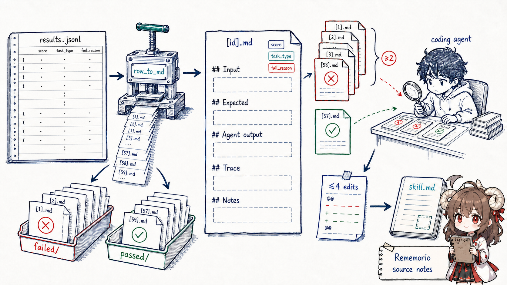
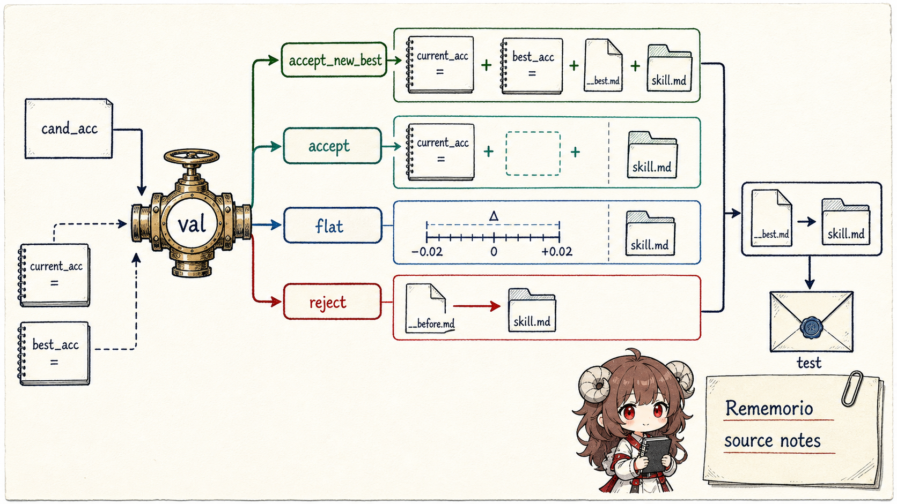
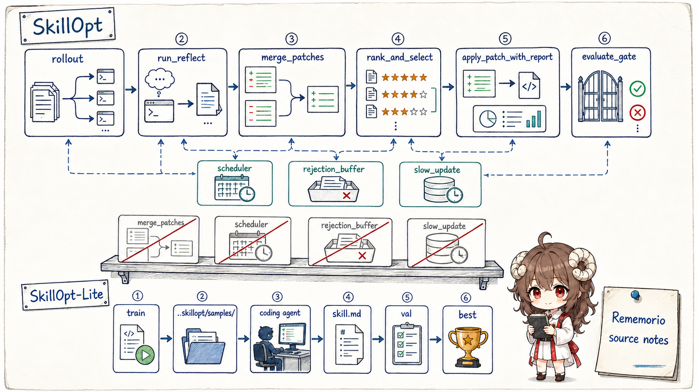
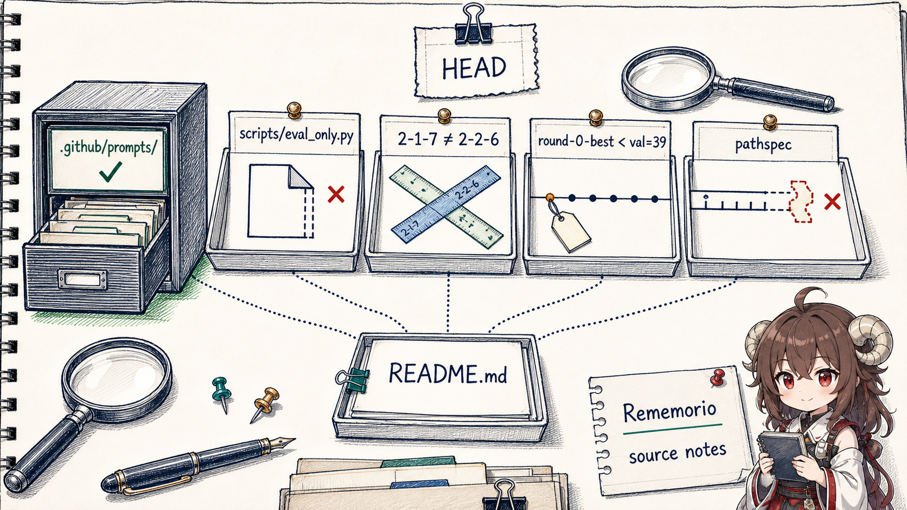

证据边界。本文固定在仓库的一个公开源码快照上阅读。链接到文件或函数的结论属于“已验证源码”；从多个可见约束推导出的判断会明确写成“工程推论”；性能数字只复述项目 README 与技术报告，本文没有重跑基准。
阅读契约。我们会一直跟着一个形状级例子：SpreadsheetBench 的一批任务里，多个 Agent 都在写回工作簿时破坏公式或选错 sheet。这个例子来自优化 prompt 明示的 failure buckets，但不虚构项目未公开的具体样本计数。读完后，你应该能回答：谁触发进化、它看到什么、能改什么、谁决定保留、结果何时才算可采用。
模型参数保持冻结，变化落在 skill.md 或受限的 harness 文件上。
轨迹先文件化，再跨样本找共性，并用 passed 轨迹反证。
优化 Agent 只生产 candidate；validation gate 才拥有保留与回滚权。
控制逻辑清楚，但当前 HEAD 的脚本、数据口径和 HarnessOpt 命令仍有断点。
一、先把“自进化”翻译成一个可执行闭环
最容易误读的地方，是把 SkillOpt-Lite 想成一种在线微调。它没有计算梯度，也不改模型参数。更准确的说法是：把自然语言 skill 当成可部署程序，把 Coding Agent 当成补丁生成器，把 evaluator 当成提交权限。模型 M 和 harness H 在一次 skill 优化实验里保持不变，真正被搜索的是文本工件 skill.md。
技术报告把目标写成在任务分布上最大化 H(M, z, s) 的奖励，其中 s 是 skill 文本。由于文本空间离散、harness 和环境不可微，项目不去近似数值梯度，而是利用 rollout 里已经可读的错误、工具调用和执行轨迹。于是优化从“盲试一个方向”变成“像调试程序一样读失败，再编译出一个更好的说明文件”。这是报告所说的 language-mediated program compilation，也是 Lite 版最有价值的心智模型。
1.1 五个 owner，不要压成一个“Agent”
| Owner | 拥有的状态 | 允许做什么 | 不拥有的权力 |
|---|---|---|---|
目标模型 M | 本轮输入与生成轨迹 | 按当前 skill 完成任务 | 不会自动改写自己的 weights |
Harness H | 工具、循环、超时、环境执行 | 把任务跑成可评分结果 | 在 SkillOpt-Lite 轮次里默认不改自身 |
skill.md | 可复用的领域规则与操作范式 | 被小补丁改写、快照和回滚 | 不证明改动有效 |
| Coding Agent | 当前 skill、失败/成功轨迹、源码工具 | 诊断共性并生成 candidate | 不能自己宣布 candidate 是 best |
| Evaluator / gate | split、评分、current/best 账本 | 接受、拒绝、恢复与最终报告 | 不负责提出补丁内容 |
1.2 真正的 trainer 是一份 prompt 文件
在 Lite 路径里，训练循环不是由一个新的优化器服务常驻执行，而是由 Coding Agent 读取并执行 skillopt-loop.prompt.md。README 也明确要求：把仓库放进能读 prompt 文件的 Coding Agent，命令要发在 Agent chat 里，而不是普通 shell。换句话说，文件系统不仅保存数据，也保存优化器的控制程序。
这带来一个很实际的优点：循环策略可读、可 diff、可按 benchmark 调整。代价也同样直接：prompt 对工作目录、宿主工具、长命令恢复和文件约定非常敏感；文字里的一处路径错误就可能让“算法”在执行前停住。
二、一轮优化到底发生什么
现在跟着那批 spreadsheet 任务走一轮。前台产品请求并不会自动触发进化；用户先显式调用 slash command，优化才作为一段离线/维护工作开始。它看到的是固定的当前 skill 和本轮 train rollout，不应该读取 val/test 的任务内容来写补丁。
2.1 从 snapshot 到下一批样本
| 阶段 | 输入快照 | 写入 | 推进条件 |
|---|---|---|---|
| 基线 | 初始 skill.md、完整 val | round-0 best 快照 | 记录 baseline 分数 |
| Train rollout | 当前 skill + train slice + seed | results.jsonl 与逐条样本文件 | 有可读轨迹 |
| Improve | 当前 skill + latest train samples | __before.md 与 candidate skill | 存在跨样本、可泛化的模式 |
| Val gate | candidate + 完整 val | current/best/rollback 状态 | 分数跨过门槛，或被判为 flat/reject |
| 下一轮 | 门控后磁盘上的 skill | 新 seed 的 train samples | 下一次 improve 只看与当前工件匹配的轨迹 |
current skill
-> snapshot __before.md
-> run train(seed = r)
-> write failed/*.md + passed/*.md
-> diagnose recurring pattern
-> patch skill.md
-> run full val
-> accept | flat | reject
-> run train(seed = r + 1)
final
-> restore best snapshot
-> run test exactly once2.2 允许什么、禁止什么、什么时候可以什么都不做
Improve prompt 把权限收得很窄：必须先完整读 workspace/skill.md，再抽样读 samples/failed/ 与 samples/passed/；只允许改 workspace/ 下的 skill，不碰 baseline。它还要求单例 edge case 跳过，只有至少两个失败支持同一模式才提出修改。没有样本时直接停止；找不到稳定共性时也可以不产生有效 patch。这是“可 no-op”的边界，不是每轮必须写点东西。
成功输出会落到三类地方：样本目录保存本轮观察，.skillopt/history/ 保存可回滚快照，workspace/skill.md 保存下一轮真正使用的工件。后续轮次不是读取一份抽象“记忆”，而是直接看到这些文件，以及由当前 skill 重新生成的新轨迹。
三、轨迹文件化：为什么 Coding Agent 能代替一层优化框架
Lite 的关键不是“让 LLM 反思”，而是把反思所需的证据变成 Coding Agent 最擅长处理的对象。row_to_md 把 results.jsonl 的每一行转成独立 Markdown：frontmatter 里有 id、status、score、env 和 tags，正文再放 Input、Expected、Agent output、Trace 与 Notes。失败和成功分别进入两个目录。

3.1 一条样本先解决“它到底看到了什么”
对我们的 spreadsheet 例子，一条样本不只是“失败=0”。它把原始 instruction、期望结果、Agent 输出、末尾 ReAct 轨迹和 fail_reason 放在同一文件里。若是执行阶段失败，prompt 还要求直接读生成的 solution.py；若是 Agent 阶段耗尽 turn，则只追最后几轮它反复卡住的位置。
---
id: task_x
status: failed
score: 0
tags: [sheet_level, exec]
---
## Input
## Expected
## Agent output
## Trace
## Notes
fail_reason: ...这是形状级例子，不是项目里的某条真实样本。重要的是 owner 变化：原来埋在 evaluator 输出里的 episode，现在成为有地址的证据单元；Coding Agent 可以先看目录分布，再按需要打开少量高信号文件，而不是把所有长轨迹一次塞进上下文。
3.2 Consensus mining 不是多数投票，而是跨任务不变量
读取预算先按 task_type 分桶，再限制失败/成功样本数与总 trace 文本。诊断规则随后要求：
- failure-first：失败与成功建议冲突时，优先修复重复失败，但仍检查成功样本是否会被破坏；
- 至少两个支持：单一任务特例跳过，不把某个 sheet name、列号或 row count 写进 skill；
- passed 反证：同 task type 至少读一条成功轨迹，确认现有 skill 是否已经覆盖该变体；
- 最小有效 patch：SpreadsheetBench 最多四处 edit，具体代码范式优先于泛泛提醒。
于是“多个任务破坏公式”不会直接变成“永远不要写公式”这种错误规则。更好的补丁会把 owner 和条件写清：何时必须使用 openpyxl 保留 workbook 结构，怎样遍历真实行数，什么时候不能依赖 preview。candidate 到这里才算产出，还没有得到有效性证明。
四、Validation gate 才拥有提交权限
如果 Coding Agent 能一边诊断、一边宣布自己改对了，闭环就退化成自我说服。SkillOpt-Lite 把内容生成与接受权分开：train 负责产生修改信号，val 负责在不可用于写补丁的任务上选版本，test 在所有选择结束后只运行一次。
4.1 Train、val、test 是三套权限，不只是三份文件
| 阶段 | 优化器可见什么 | 允许改变什么 | 能回答什么 |
|---|---|---|---|
train | 任务内容、失败/成功轨迹、生成代码 | 可以驱动 skill.md patch | “下一处应该试着改什么？” |
val | 只返回可比较的 aggregate score | 可以决定接受、flat 或回滚 | “这个 candidate 值得继续保留吗？” |
test | 循环完成后才打开 | 不再允许影响 candidate 选择 | “最终 best 对未参与选择的样本怎样？” |

4.2 Lite prompt 的 dead band 比纯 evaluate_gate 多一层状态
仓库里的纯函数 evaluate_gate 只有三种结果：超过 current 且超过 best 是 accept_new_best；只超过 current 是 accept；否则 reject。但 SpreadsheetBench 的 Lite prompt 又包了一层 ±0.02 dead band，并增加 flat：
Δ ≥ +0.02才按 improvement 接受；Δ ≤ -0.02回滚；|Δ| < 0.02时，candidate 仍留在磁盘成为下一批 train 的起点，但current_acc与best都不更新；- 若 soft score 提升足够大，prompt 允许把 hard-flat 升格为 accept。
这意味着 flat 不是“接受但不叫接受”，也不是纯 no-op。它能影响下一轮看到的行为分布，却不会成为最终恢复目标；循环结束仍以 best snapshot 为准。文章或实现若只引用 gate.py，就会漏掉这个由 prompt 持有的状态语义。
4.3 Val 与 train 隔离，但不是永远未被搜索触碰
项目把 val 称为 held-out，因为 improve 不读取 val item，只用 aggregate score 做 gate。这个隔离是实在的。不过同一套 val 被多轮反复用于选择 candidate，所以从整个优化过程看，它更像search set，而不是一次性、完全未接触的最终估计。工程推论是：轮数、dead band 和 stopping rule 都会间接适配这套 val；真正承担最后未见样本估计的是一次性 test。
| 状态 | 已经发生 | 仍缺什么 |
|---|---|---|
| 输出已产出 | Coding Agent 写出 candidate skill.md | 可比较的独立验证 |
| 输出已验证 | candidate 通过 val gate，最终 best 运行一次 test | 目标部署的成本、延迟、安全与回滚检查 |
| 输出已采用 | 有权限的人或发布流程把 best 设为真实 Agent 工件 | 持续监控与复盘仍不可省略 |
五、Full SkillOpt 与 Lite：删掉的是中间拓扑，不是证据闭环
同一仓库还保留了 Full SkillOpt 的 Python trainer。trainer.py 在文件头列出六阶段：Rollout、Reflect、Aggregate、Select、Update、Evaluate。Lite 没有删掉 rollout 或 evaluation，而是让 Coding Agent 直接在文件系统里承担原来 reflection pooling、patch merge、ranking 和 update orchestration 的大部分工作。

| 问题 | Full SkillOpt | SkillOpt-Lite |
|---|---|---|
| 轨迹怎样读 | minibatch reflection 与结构化 patch | 逐条 Markdown + Coding Agent 探索 |
| 多个建议怎样合并 | merge_patches 层级聚合 | Agent 在同一上下文中提取跨任务共性 |
| 更新幅度 | edit budget / scheduler | prompt 里的最小修改和 edit 上限 |
| 失败历史 | rejection buffer / step buffer | history 快照、文件 diff 与下一轮新样本 |
| 接受权 | selection/evaluation gate | full val gate + best snapshot + one-shot test |
不要混用两条路径的保证。Full trainer 的默认配置开启 use_slow_update: true；其实现还会把 slow-update guidance 无条件注入 current 与 best，并标记 force_accept。这是 Full SkillOpt 的设计，不是 Lite prompt 的严格 val-gated 语义。仓库里有同名概念，不等于它们经过同一控制面。
六、HarnessOpt：当优化对象从说明书扩到执行器
一旦失败不是 skill wording 造成，而是 preview 太小、code extraction 太脆、超时策略不合适或工具缺失，继续改 skill.md 只会把 harness 缺陷包装成更多提示词。HarnessOpt 的合理出发点，就是把搜索面扩到 Python harness；但可写面一扩大，风险、验证成本和审批权也必须同时升级。
6.1 可写面由 allowlist 定义，skill 反而是 denylist
HarnessOpt prompt 明确只允许编辑 rollout.py、react_agent.py、codegen_agent.py、executor.py、recalc_harness.py 与 adapter.py；skill、evaluator、dataloader、configs 和 prompts 都在 denylist。它还说明 skill-content failure 要路由回独立的 /skillopt-loop。这比 README 表格里“skill.md and agent code”的宽泛描述更具体，因此阅读当前执行合同时，应以 prompt 的 allowlist/denylist为准。
6.2 Round 0 先做架构决策，再把后续轮次收窄
Round 0 会跑 baseline val 和完整 train，扫描失败分布，再从 memory、tool、prompt context、loop policy、codegen/executor shape 等角度提出三项决策。新的 tool、memory 或执行形状可能改变系统边界，所以 prompt 要求在应用 patch 前打印 brief 并等待用户 approve。Round 1 之后才进入自动化的 surgical edit、diff guard、smoke、full val 和 rollback 循环。
这套设计保护了一个重要不变量：架构性扩大权限必须有人批准，局部修补才可以交给自动 gate。但当前 Round 0 还有一个实现上的空档：bootstrap patch 会先 commit 并打上 round-0-best 标签，只跑 6 条 debug batch；prompt 明说这里不做完整 val，要等 Round 1 才验证。如果后续没有产生新 best，最终恢复逻辑可能把一个只通过 smoke、没有通过完整 gate 的 bootstrap 当成 best。
6.3 Checkpoint 展示了 harness 优化能改出什么
harnessopt_ckpt 不是抽象愿景，它保存了具体代码变化。例如 codegen_agent.py 把 workbook preview 从 5×20 扩到 15×30，并加入 reasoning-effort timeout fallback；同一文件还实现了不读取 gold 的输出自检，识别 answer cells 中残留的 formula string。这些能力都由环境变量开关控制，默认关闭，体现了 harness 改动应可回退、可做 A/B 对照。
七、读到 HEAD：方法清楚，公开主路径还没有完全闭合
到这里可以把“设计是否合理”和“fresh clone 是否能照文档跑通”分开。前者有足够源码支撑；后者在当前快照上仍存在几个可复现的断点。按照源码审计常用的三档：有真实入口和副作用才叫 main path；只有文件但未接通叫 disconnected；文档命名的目标链没有完成则叫 target route not demonstrated。

7.1 五个需要在复现前先修正的断点
| 观察 | 源码证据 | 状态判断 | 实际后果 |
|---|---|---|---|
| Prompt 控制面完整可读 | .github/prompts/*-loop.prompt.md 定义 snapshot、improve、gate、rollback、test | 主合同可见 | 能准确理解预期循环与权限 |
当前 HEAD 没有 scripts/ | run.sh 调 scripts/eval_only.py，pyproject.toml 也注册 scripts entry point；但后续提交删除了整个目录 | 目标路径未证明 | 按 README/run.sh 的 fresh-clone 路径会在 evaluator 入口前失败 |
| LiveMath split 漂移 | config 指向 2-1-7_seed42；download 与 prompt 指向 2-2-6_seed42；prompt 又同时出现 val=35 与 val=18 | 合同漂移 | 不同入口可能评估不同样本，指标不可直接横比 |
| Round-0 best 未经过完整 gate | tag、smoke 与 best 初始化顺序 | bootstrap 空档 | 需要先 gate Round 0，再允许它进入 best slot |
| HarnessOpt pathspec 与 cwd 重复 | prompt 先 cd harness_example/spreadsheetbench，随后仍把同一路径传给 git status/add | 命令路径断裂 | diff guard 可能看到空集合，git add 直接 pathspec 失败 |
| 插件覆盖面仍是 roadmap | README 一边列举多个 host，一边把 Codex CLI 与 Claude Code plugin 标为 TODO | 宿主适配未交付 | 不能把 VS Code prompt 文件等同于所有 Coding Agent 的即装即用扩展 |
为什么 pathspec 会失败
cwd = harness_example/spreadsheetbench/
pathspec = harness_example/spreadsheetbench/
resolved intent:
harness_example/spreadsheetbench/
+ harness_example/spreadsheetbench/
result:
no tracked files for that doubled relative path这是确定性的路径解析问题，不需要推测模型行为。更稳妥的写法是在该 cwd 下使用 -- .，或始终在仓库根目录运行并保留完整 pathspec。另一个风险是 prompt 使用 git reset --hard 做回滚；若工作树包含不属于优化轮次的改动，它的影响范围大于单个 harness 目录，因此生产化实现应改成独立 worktree/branch 或精确快照。
7.2 项目报告了什么，本文没有证明什么
| 项目口径 | 报告值 | 本文的证据级别 |
|---|---|---|
| LiveMath · GPT-5.4-nano + SkillOpt-Lite | 比 Full SkillOpt 高 25.4 points | 项目报告，未复现 |
| LiveMath · GPT-5.5 + SkillOpt-Lite | 比 Full SkillOpt 高 8.8 points | 项目报告，未复现 |
| ALFWorld · GPT-5.4-nano | 81.3，较 SkillOpt +9.5 | 项目报告，未复现 |
| Spreadsheet 平均提升 | +12.6 points | 项目报告，未复现 |
| HarnessOpt · SpreadsheetBench | nano 0.7758，对比 GPT-5.5 标准 harness + SkillOpt 0.7620 | 项目报告，未复现；当前复现入口还缺脚本 |
这些结果足以说明项目值得复现，但还不能把“更少模块”直接推广成普遍定律。缺少独立重跑时，更稳妥的结论是：强 Coding Agent 可能把专用的文本优化拓扑折叠成文件调试；是否更好，仍由目标模型、benchmark、val 复用程度、token 成本与宿主工具决定。
八、什么场景适合借用这套设计
SkillOpt-Lite 最值得迁移的不是 slash command，而是责任划分：把可变工件做成文件，把观察做成逐条证据，把补丁生成与接受权分开，把 test 留到搜索结束。只要这四条成立，实现可以是 Coding Agent、CI job，甚至一个更小的专用服务。
Prompt、skill、policy 或 harness 文件能被精确 allowlist，且每次改动都可 diff、可回滚。
任务有稳定输入、确定或可校准评分、足够大的 train/val/test，rollout 成本可承担。
没有独立环境结果时，反思只是 hypothesis；增加轮数只会放大自洽叙事。
若 candidate 能改权限、数据、账单或部署，必须先进入隔离环境和人工 adoption gate。
8.1 一套可迁移的最小规则
- 先固定比较条件：锁定目标模型、harness、数据版本、seed 策略和 scorer；一次只优化一个 owner。
- 让每条轨迹有地址：输入、输出、trace、score、failure reason 和生成工件必须能被单独引用。
- 只修跨任务模式：至少两个独立失败支持同一规则，并用成功样本或反例尝试推翻它。
- 限制 patch surface：allowlist、edit budget、feature flag、snapshot 与 rollback 缺一不可。
- Val 决定 retention，test 只做一次：重复看 test 就把它降级成新的 val。
- 把 adoption 再设一道门：检查 intended outcome、关键回归、成本/延迟、恢复、权限与人工责任人，不能用 benchmark best 自动替代发布决策。
8.2 最终判断
SkillOpt-Lite 的核心自进化机制是成立的，而且比“让 Agent 自己反思”更严谨：它有显式触发、有固定快照、有读写边界、允许 no-op、有持久历史、有可比较 rerun，也会在最终 test 前恢复 best。它优化的是外部行为资产，不是模型权重。
当前仓库更像一份有结果、有 checkpoint、有清晰控制程序，但交付表面仍在收口的研究/工程快照。如果要直接用于现有 Agent，第一步不是复制 prompt，而是先补齐 evaluator 入口、统一 split contract、修正 HarnessOpt pathspec、让 Round 0 先过完整 gate，并把 destructive git rollback 放进隔离工作树。完成这些后，这套极简闭环才从“候选方案”进入“可验证实现”；再经过目标业务的安全、成本与回滚检查，才谈得上采用。